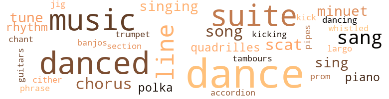

She Walks in Beauty, by Rogers, Joel A. (1963)
148 music-related terms matched in this text.
Most frequent terms in this topic: dance (27); danced (18); music (16); suite (15); line (10)
accordion.n.01
Definition: a portable box-shaped free-reed instrument; the reeds are made to vibrate by air from the bellows controlled by the player
| word | sentence |
|---|---|
| accordion | Jenkins brought in the kitchen man with his accordion and he played lively tunes . |
banjo.n.01
Definition: a stringed instrument of the guitar family that has long neck and circular body
| word | sentence |
|---|---|
| banjos | Barrels of home-made beer , casks of wine , tables piled high with food , were under the trees ; oxen , roasted whole on spits , filled the air with tempting redolence ; West Indian and African drummers made pulses beat faster with their tambours and banjos . |
chant.n.01
Definition: a repetitive song in which as many syllables as necessary are assigned to a single tone
| word | sentence |
|---|---|
| chant | All marched up the aisle to the majestic pealing of the organ and the chant of the . |
chorus.n.01
Definition: any utterance produced simultaneously by a group
| word | sentence |
|---|---|
| chorus | I was in the chorus and the Ballet at the Gaiety , but there were so many of us . . . " " Well , stay away from there . |
| chorus | Thanks to the clothes , she was able to appear as an orange girl at the Royal Gaiety , where her fine figure , and wit brought her to the notice of the director , who gave her a small part in the chorus . |
| chorus | Church bells rang in chorus . |
cornet.n.01
Definition: a brass musical instrument with a brilliant tone; has a narrow tube and a flared bell and is played by means of valves
| word | sentence |
|---|---|
| trumpet | A soldier in the balcony blew a trumpet and a colonel emerged and read an order calling on all to go home . |
dance.n.01
Definition: an artistic form of nonverbal communication
| word | sentence |
|---|---|
| dance | Passers-by stopped to see the dance . |
| dance | She led him off to a room she had fitted up as a gymnasium , sent for her dance instructor , and changed into ballet costume . |
| dance | The dance finished , she proposed that he do a minuet with her , but he led her to her bedroom instead . |
| dance | Suddenly in the midst of the dance the curtain was rung down . |
| dance | At times she led the dance in vast galas . |
| dance | Eva hardly missed a dance . |
| dance | She read , " This priestess of the dance is about twenty . |
| dance | " The dance she will do for us was , I understand , composed for her by a powerful emigre prince . |
| dance | Then her dance began . |
| dances | The musicians came in , played the grand march in which all took part , then waltzes , quadrilles , and country dances . |
| dance | In one part I 'll have benches and cradles for the children ; in the other a dance studio ... " A danco studio ? " |
| dances | At dances her card was filled almost instantly . |
| dances | She ar - ranged dances in which they could take part ; and she would pull out older men to dance with them . |
| dance | She took Nicole about , dined with her , and had the children dance for her . |
| dance | Bonvoisin took her for the next dance . |
| dance | I have the next dance with father . " |
| dance | For ap - pearance sake her next dance would have to be with Bonvoisin . |
| dance | When the dance ended and he was escorting her back to her suite , he said savagely , " I 'll see that father of yours tomorrow . " |
| dances | And some lively African drums and dances . |
| dance | He led her out for a dance . |
| dance | When the dance ended , a lackey came to her . |
| dance | Husbunds , wives , lovers ex-changed as in a courting dance . " |
dance.n.02
Definition: a party of people assembled for dancing
| word | sentence |
|---|---|
| Dance | Dance for them . |
| Dance | Dance for them in - cognito ! |
dance.v.02
Definition: move in a pattern; usually to musical accompaniment; do or perform a dance
| word | sentence |
|---|---|
| dancing | He 's a fool and needs her shrewd guidance . . . and that dark man with the round trimmed beard she 's dancing with is her lover , Count Bergami , Caroline met him when she lived in Italy . |
dance.v.03
Definition: skip, leap, or move up and down or sideways
| word | sentence |
|---|---|
| dance | And I 'll dance for you . " |
| danced | One presented him a bouquet of roses , took his hand , led him out , and danced ring-a-rosy around him . |
| danced | Seizing Betsy , who was already unsteady , he danced with her . |
| danced | Eva , warm with wine , danced for them , then Rupert seized her and she danced with him . |
| danced | Eva , warm with wine , danced for them , then Rupert seized her and she danced with him . |
| danced | She and de Rocheford danced , then utterly worn out , he went to an alcove , dropped into an armchair and was soon asleep . |
| dance | Eva remained to dance with anyone who asked her . |
| dance | That was too sarcastic , she felt and per - mitted him to take her hand to dance . |
| danced | She seized him and danced about the room . |
| danced | Eva danced about the room . |
| dance | " Know a pretty little dell - they say the fairies used to dance there midsummer nights .... " " No , thank you . |
| dance | When I saw you dance at her party I felt sure I had seen you before . |
| dance | But Artois is wondering whether you would dance for them . |
| dance | Tonight , she has graciously consented to dance privately for you at the Club des Emigres in order to raise a fund for our needy refugees . |
| danced | They danced . |
| danced | After the feast her pupils danced for the guests . |
| danced | She danced better than any of the other ladies . |
| dance | She ar - ranged dances in which they could take part ; and she would pull out older men to dance with them . |
| danced | She took off all her clothes and danced for him but he would n't even look at her . " |
| dance | But after less than a minute , she dragged him up to dance . |
| danced | Letting him sleep , she danced with some of the villagers until La Michelle came to take her to the bridal bed in the royal suite . |
| danced | She danced frequently with him . |
| danced | After dinner , she danced with him and was most friendly . |
| danced | She danced with de Rocheford and others all the while hoping he would come . |
| danced | He danced rather shakily around the girl to the guffaws of the crowd , then hung the halter about her neck and tied the cord around her waist . |
| danced | Instead of walking around , bored , ns one usually did at the receptions of Marie-Therese , they chatted and laughed and danced with the ballet-girls who had been brought from the music halls . |
| danced | She danced . |
guitar.n.01
Definition: a stringed instrument usually having six strings; played by strumming or plucking
| word | sentence |
|---|---|
| guitars | From passing canoes came singing and the strumming of guitars . |
jig.n.01
Definition: music in three-four time for dancing a jig
| word | sentence |
|---|---|
| jig | They went to the drawing-room , where Rupert bawled bar - rack room songs and did a jig . |
kick.v.04
Definition: kick a leg up
| word | sentence |
|---|---|
| kicking | " I wo n't soil my hoot by kicking the likes of you . . . Where are those letters ? " |
| kick | " I came back yes - terday with the full determination to kick you out . |
largo.n.01
Definition: (music) a composition or passage that is to be performed in a slow and dignified manner
| word | sentence |
|---|---|
| largo | One largo reddish bull reminded him of his prize-hull , Minotaur . |
minuet.n.01
Definition: a stately court dance in the 17th century
| word | sentence |
|---|---|
| minuet | The dance finished , she proposed that he do a minuet with her , but he led her to her bedroom instead . |
| minuet | Eva did it with him ; a polka with de Rocheford and a minuet with Marsignac . |
| minuet | Artois took her arm and led the grand march , after which she did a minuet with him . |
music.n.01
Definition: an artistic form of auditory communication incorporating instrumental or vocal tones in a structured and continuous manner
| word | sentence |
|---|---|
| music | The boy said he knew no ballet music . |
| music | Too bad she had n't some good music . " |
| music | Madame Agathe presented the others : Joubert to teach danc - ing ; Tourville , French ; Vicuzae , deportment ; Thibaut , calisthen - ics ; St. Clair , music . |
| music | She was given the left wing of twenty rooms with salon , music room , bedrooms , kitchen and pantry . |
| music | A burst of music came from the courtyard . |
| music | The music soared and the procession moved off . |
| music | The music added to her torture . |
| music | The orchestra began the music from the first scene of Figaro . |
| music | " I never knowed music for the gentry was so lively , " she said . |
| music | Their creole music had become so popular that scores of dance-halls sprang up over the city . |
| music | " He 's already bewitched . . . A thin , reed-like music interrupted d'Artois and the curtain parted slowly revealing a painted scene of Smithfield , London . |
| music | The music grew less mournful . |
| music | The music grew faster . |
| music | They embraced there amid the fragrance of the shrubs and the music of the brook . |
| music | Instead of walking around , bored , ns one usually did at the receptions of Marie-Therese , they chatted and laughed and danced with the ballet-girls who had been brought from the music halls . |
| music | The chamberlain directed them to the music salon . |
phrase.n.02
Definition: a short musical passage
| word | sentence |
|---|---|
| phrase | " Ah , sire , I see you 're as optimistic as ever and are still the master of the fitting phrase . " |
piano.n.01
Definition: a keyboard instrument that is played by depressing keys that cause hammers to strike tuned strings and produce sounds
| word | sentence |
|---|---|
| piano | I would also like a piano and poles for stretching ... a little gymnastics will do them good . " |
| piano | The next afternoon she was at the piano with de Rocheford , when a page brought her a card . |
pipe.n.04
Definition: a tubular wind instrument
| word | sentence |
|---|---|
| pipes | Women sat on broken steps , smoking clay pipes . |
polka.n.01
Definition: music performed for dancing the polka
| word | sentence |
|---|---|
| polkas | Two polkas and he dropped limp on a bench , A few moments more and he was Bound asleep . |
| polka | Eva did it with him ; a polka with de Rocheford and a minuet with Marsignac . |
promenade.n.01
Definition: a formal ball held for a school class toward the end of the academic year
| word | sentence |
|---|---|
| prom | Marsignac herded them all into another room , and prom - ised to bring her to them , then went to Eva . |
quadrille.n.01
Definition: music for dancing the quadrille
| word | sentence |
|---|---|
| quadrilles | She had brought quadrilles of black women and musicians from Haiti . |
| quadrilles | The musicians came in , played the grand march in which all took part , then waltzes , quadrilles , and country dances . |
refrain.n.01
Definition: the part of a song where a soloist is joined by a group of singers
| word | sentence |
|---|---|
| chorus | Before sitting , he lifted his glass of champagne , " To Eva , my daughter , " All shouted in chorus , " Vive , Mademoiselle Eva . " |
rhythm.n.04
Definition: the arrangement of spoken words alternating stressed and unstressed elements
| word | sentence |
|---|---|
| rhythm | The West Indian drummers , dancers and singers stepped up their rhythm to welcome them . |
| rhythm | Their lively rhythm made all feel like dancing as they entered . |
scat.n.01
Definition: singing jazz; the singer substitutes nonsense syllables for the words of the song and tries to sound like a musical instrument
| word | sentence |
|---|---|
| scats | Suddenly a rider with a groom and an equerry cut in ahead of them , forcing their coachman to rein in and throwing them forward in their scats . |
| scats | And he takes the cheapest scats among the whores and ragmen . " |
| scat | Betsy , dressed like a grand dame , was witnessing it all from a scat in the rear . |
| scat | Bonvoisin rose and offered him his scat and pretended to bo happy to see him . |
section.n.01
Definition: a self-contained part of a larger composition (written or musical)
| word | sentence |
|---|---|
| section | At the cathedral he took her to the section reserved for royalty . |
sing.v.02
Definition: produce tones with the voice
| word | sentence |
|---|---|
| singing | They marehed on the City Hall , the Louvre , the Tuileries and the Opera , singing the Marseillaise . |
| sang | Little daughters of the tenants , pupils of Eva , in picnio dress , came to him and sang verses in his honor . |
| sang | Bon sang ! |
| sang | The footman turned his head slightly towards his master and sang out , " Thirty . " |
| sang | On the way home they sang and tossed coins to beggars . |
| sang | sang out an attendant . |
| sing | Montelli is to sing . |
| sing | But ortolans - dear little things - sing so sweetly in the hedges . . . You eat them , Joseph . |
| sing | It was Spanish and she had had it designed in honor of Montello , Spanish baritone , who was to sing Figaro in the Barber of Seville at the ball . |
| sang | The press and the cafe poets sang her praise . |
singing.n.01
Definition: the act of singing vocal music
| word | sentence |
|---|---|
| singing | In the distance troops were approaching with the tricolor and singing the Marsellaisc . |
| singing | From passing canoes came singing and the strumming of guitars . |
song.n.01
Definition: a short musical composition with words
| word | sentence |
|---|---|
| songs | The clergy had been forbidden to teach in schools , the lives of revolutionary heroes replaced the lives of the saints ; the statues of heroes those of Christ and the Virgin ; patriotic songs for the hymnal . |
| songs | They went to the drawing-room , where Rupert bawled bar - rack room songs and did a jig . |
| songs | So did sailors , arm in arm , bawling obscene songs . |
| song | She slept soundly that night and awoke to the song of the birds . |
suite.n.01
Definition: a musical composition of several movements only loosely connected
| word | sentence |
|---|---|
| suite | Eva wanted to sco it but since she had better not go to the palace , she went to Betsy 's suite at Hotel des Anglais which overlooked it . |
| suite | Then seized with remorse she went to his suite . |
| suite | Sure that the worse had happened she sprang from the carriage , ran to the steps and up them till she reached his suite . |
| suites | At the fashionable hostelry on Piccadilly , he engaged two suites , one for his master , and one for Eva . |
| suite | She brushed her hair , tied it back with a pink ribbon , and called Mercury who led her down to de Rocheford 's suite , where Picot took her in charge and led her to the dining-room . |
| suite | " Shall we go down to my suite , madame ! " |
| suite | De Rocheford took them all to dinner in his suite . |
| suite | He left her at her door and went up to his own suite . |
| suite | Breakfast was served in her suite the next morning and he came to eat it with her . |
| suite | Come we 'll engage & suite . |
| suite | " I 'll come for you as soon as your suite is ready , " he promised . |
| suite | Letting him sleep , she danced with some of the villagers until La Michelle came to take her to the bridal bed in the royal suite . |
| suite | When they returned he tried again to take her to his suite , telling her he grew more madly in love with her daily . |
| suite | The third day Eva was showing her about the chateau , when they passed Bonvoisin 's suite , Nicole invited her in to see some rare , hand-stitched petticoats in her room . |
| suite | She darted to her suite for them and thrust them into de Rocheford 's hand . |
| suite | She burst into Regine 's suite . |
tambour.n.02
Definition: a drum
| word | sentence |
|---|---|
| tambours | Barrels of home-made beer , casks of wine , tables piled high with food , were under the trees ; oxen , roasted whole on spits , filled the air with tempting redolence ; West Indian and African drummers made pulses beat faster with their tambours and banjos . |
tune.n.01
Definition: a succession of notes forming a distinctive sequence
| word | sentence |
|---|---|
| tune | She could hardly believe her good for - tune . |
| line | With the departure of An-gouleme , he was now second in line for the throne . |
| tune | Who will give us a tune ! |
| line | Thoughts of his son reminded him again that he was the last of his line . |
| line | He 's King Louis ' cousin and belongs to a long line of distinguished men who were , the brick and mortar that built the Bourbon line . |
| line | It was a reminder that he was the last of his line . |
| tunes | Jenkins brought in the kitchen man with his accordion and he played lively tunes . |
| line | What meaning has that for me , the last of my line ! |
| line | He 's Louis 's nephew and in line for the throne , next to his father , Artois . " |
| line | To think that you , from a long distinguished line , desire me . |
| line | The daughter of an English convict , passing off as of royal descent And with the connivance of one who was fourth in line for the throne . |
| line | He was fourth in line for the throne . |
| line | But Na - poleon was opposing all who were in line for the throne and he went to Italy . |
whistle.v.01
Definition: make whistling sounds
| word | sentence |
|---|---|
| whistled | The sun shone brightly ; birds whistled joyously ; field mice and rabbits scampered about , looking around at times in dumb caution . |
zither.n.01
Definition: a musical stringed instrument with strings stretched over a flat sounding board; it is laid flat and played with a plectrum and with fingers
| word | sentence |
|---|---|
| cither | And the little black mole - I have n't forgotten its location cither , I recall the geography of your body far better than I do that of France ! |
310 violence-related terms matched in this text.
Most frequent terms in this topic: sword (15); ball (14); killed (13); hated (10); cannon (10)
abhor.v.01
Definition: find repugnant
| word | sentence |
|---|---|
| abhor | He added , " Like everyone here , I abhor bloodshed . |
| loathed | She loathed Bonvoisin so much it made her ache physically . |
abhorrence.n.01
Definition: hate coupled with disgust
| word | sentence |
|---|---|
| Loathing | Loathing of Picot so filled her she hardly heard what Madame Agathe said . |
anger.n.01
Definition: a strong emotion; a feeling that is oriented toward some real or supposed grievance
| word | sentence |
|---|---|
| anger | " This is too severe , " he pronounced , " It would cause added anger . " |
| anger | The anger in Eva 's voice told Barclay that something had gone wrong at the villa . |
| anger | She thought of Duchess Louise and her anger boiled . |
| anger | When butchery was at its worst , she had helped to stop it by diverting anger to danc - ing . |
| anger | He exploded in anger . |
| anger | Aroused anger will counteract his present feeling of helplessness . |
| anger | Irritated at her refusal to take him seriously , he said with rising anger , " When I married you , I did n't expect such absolute abandonment of your wifely duties . |
| anger | Face twisted in anger , she shouted imprecations in French and spat in Regine 's face . |
attack.v.01
Definition: launch an attack or assault on; begin hostilities or start warfare with
| word | sentence |
|---|---|
| assailed | Then a terrible fear assailed her . |
battle.v.01
Definition: battle or contend against in or as if in a battle
| word | sentence |
|---|---|
| battling | A student and a soldier were battling on its roof over the tricolor there . |
bayonet.n.01
Definition: a knife that can be fixed to the end of a rifle and used as a weapon
| word | sentence |
|---|---|
| bayonets | The citizens took advantage of the reloading of the soldier 's rifles to charge en masse and in spite of the bayonets , overeame the soldiers by sheer weight of numbers . |
| bayonets | Turning their bayonets on them they slaughtered the soldiers mereilessly . |
| bayonets | Soldiers charged with bayonets , pushing the crowd over the bridge or into the Seine , and clearing the square . |
| bayonets | They passed red-coated soldiers with bayonets in white buff belts , their arms around laughing French girls . |
besiege.v.01
Definition: surround so as to force to give up
| word | sentence |
|---|---|
| besieged | She was besieged by suitors . |
bleeding.n.01
Definition: the flow of blood from a ruptured blood vessel
| word | sentence |
|---|---|
| bleeding | The coachman , who had escaped into the woods , reached Beaufremont hours later , tom and bleeding . |
bloodshed.n.01
Definition: the shedding of blood resulting in murder
| word | sentence |
|---|---|
| bloodshed | " None of us here want another orgy of bloodshed and cruelty . |
| bloodshed | He added , " Like everyone here , I abhor bloodshed . |
| bloodshed | His Majesty wants no bloodshed . " |
| bloodshed | " There must be no further bloodshed . " |
box.v.03
Definition: engage in a boxing match
| word | sentence |
|---|---|
| boxed | Me mother would ha ' boxed me ears if I did that . " |
butcher.v.01
Definition: kill (animals) usually for food consumption
| word | sentence |
|---|---|
| slaughtered | He saw the hunger-crazed rabble before the guillotine dancing in mud made of human blood as it held up heads whose hair dripped with blood , mouths , half-open , sightless eyes staring ; women , frenzied as imps from hell , in coats of slaughtered soldiers ; the grim executioner thrusting necks of bound aristocrats beneath the razor-sharp blade ; the streams of blood pouring into buckets , which emptied into the Seine and ran red to the sea . |
| slaughtered | Turning their bayonets on them they slaughtered the soldiers mereilessly . |
| slaughtered | Sheer weight of humanity foreed the Swiss inside the building or over the bridge where eager patriots slaughtered them or pushed them into the Seine . |
cannon.n.04
Definition: heavy automatic gun fired from an airplane
| word | sentence |
|---|---|
| cannon | Against this mighty foree with over a thousand cannon , what have the peo - ple ? |
| cannon | Booming cannon would remind the people what was in store for them . |
| cannon | At the high iron gates was an array of cannon , with gunners , lanyard in hand , ready to fire at instant command . |
| cannon | The entire build - ing was ringed with cannon . |
| cannon | A pretty girl of eighteen in a wrinkled costume of the last revolution , a small tricolor in her hair , pushed her way through the crowd to the first row of cannon . |
| cannon | She stepped before the mouth of the cannon . |
| cannon | Halting his men within a hundred yards of the cannon , he rode up to the guns alone , and looked benevolently at the gunners . |
| cannon | Rows of cannon with their gunners , ready to fire . |
| cannon | Riding to within fifty yards of the soldiers , he dismounted , unbuckled his sword , took his pistols from his belt , dropped them on the ground and marehed alone to within a few yards of the cannon . |
| cannon | He wras leaning against a cannon but as they came up , he drew himself up and faced them gracefully . |
contemn.v.01
Definition: look down on with disdain
| word | sentence |
|---|---|
| scorned | She would issue invitations and those who had scorned her would be foreed to pay her at least outward respect including Regine . |
| despised | She , an ex-slave , a woman of color , despised in her native land , to be received by a king and queen ! |
| despise | All the women despise me . |
| despised | When you have boon poor and despised as I was , your spirit is starved . |
craze.n.02
Definition: state of violent mental agitation
| word | sentence |
|---|---|
| frenzy | A frenzy of applause interrupted him . |
| frenzy | She swirled past him in Bacchic frenzy to the furtherest alcoves then back again with high leaps . |
crucify.v.01
Definition: kill by nailing onto a cross
| word | sentence |
|---|---|
| crucify | They were preparing to crucify her there . |
dagger.n.01
Definition: a short knife with a pointed blade used for piercing or stabbing
| word | sentence |
|---|---|
| dagger | He took his pistols from the pocket of his discarded clothes , picked up his sword-cane and gave her a little dagger . |
| dagger | Oh that I could plunge a dagger in his heart . " |
desecrate.v.01
Definition: violate the sacred character of a place or language
| word | sentence |
|---|---|
| profaning | She had been accused by jealous rivals of profaning the Eleusinian mysteries , the penalty for which was death . |
displeasure.n.01
Definition: the feeling of being displeased or annoyed or dissatisfied with someone or something
| word | sentence |
|---|---|
| displeasure | Shouts of displeasure from the audience . |
draw.v.23
Definition: pull (a person) apart with four horses tied to his extremities, so as to execute him
| word | sentence |
|---|---|
| drew | When they drew up before the palatial temple of chance , Crockford himself hastened down the marble steps to receive them . |
| drew | He drew up a chair and sat beside Eva . |
enrage.v.01
Definition: put into a rage; make violently angry
| word | sentence |
|---|---|
| enraged | He learnt nothing even though he saw the people enraged by clerical ex - cesses turn Notre Dame into a beer-hall and burn its holy relics in the square . |
envy.n.01
Definition: a feeling of grudging admiration and desire to have something that is possessed by another
| word | sentence |
|---|---|
| envy | Her complexion , a light russet brown , was the envy of many paler English girls . |
| envy | " She is going to win the heart of every gentleman at the court today and be the envy of every lady , " she pro- nounced . |
erase.v.01
Definition: remove from memory or existence
| word | sentence |
|---|---|
| erase | The time has come for that to erase . |
| erase | And she ca n't be received at court without a husband - one whose name added to yours will erase the ir - regularity of her birth . " |
ferocity.n.01
Definition: the property of being wild or turbulent
| word | sentence |
|---|---|
| ferocity | Rupert curled his blond mustache and added , with mock ferocity . |
| ferocity | Steel played on steel with grim ferocity . |
fight.n.02
Definition: the act of fighting; any contest or struggle
| word | sentence |
|---|---|
| combat | And , " he fixed his monocle on her , " I 'm willing to engage in single combat any man who dares contradict me . " |
| Fighting | Fighting to keep her temper , she said , " Gustave , I thought you understood that ours was only a marriage de convenance ? |
fight.n.05
Definition: a boxing or wrestling match
| word | sentence |
|---|---|
| fight | " When the Bourbons were driven out , we thought the fight for freedom had been won for all time . |
| fight | On the Boulevard des Italiens a terrible fight was raging . |
| Fights | Fights broke out everywhere . |
| fight | The next day the fight centered on the Hotel de Ville - the City Hall . |
| fight | But there 's plenty of fight in him . |
| fight | As I said , there 's plenty of fight left in him . |
fight.v.02
Definition: fight against or resist strongly
| word | sentence |
|---|---|
| fighting | Here and there , however , a few brave souls had scaled the railings and were fighting the soldiers inside . |
| fighting | The older branch , the Bourbons , would never cease fighting to regain it . |
| fight | And I must tell you , sir , that he was at the toll-gate as I came through and I almost had to fight him off . |
| fight | " True , madame , I had to fight him off . |
| fought | She wanted to add , " And you fought so bravely there ! " |
| fought | He added , contemptuously , " Your son fought his assassins like a true De Rochefort . |
| fought | De Rocheford fought hard to keep his temper . |
| fighting | " What do you think of our fighting men these days , Madame ! " he said . |
| fight | " I think you 'll like the young baron better ---- if we can fight our way through the pretty girls swarming about him . " |
| fought | She fought him off . |
| fight | Zest to fight her enemies seized her . |
| fought | She fought hard to retain self-control . |
frustration.n.03
Definition: a feeling of annoyance at being hindered or criticized
| word | sentence |
|---|---|
| frustration | Now and then she gave a jerk as of revolt or frustration and leaped high in the air , all in motions of sheer delight . |
fury.n.01
Definition: a feeling of intense anger
| word | sentence |
|---|---|
| rage | The crowd 's rage reached its height . |
| rage | Pym yelled in pretended rage " Never , sir J " " How do ye know ! " |
| rage | That frocked devil , " he shouted in terrible rage , " his master , Satan , saved him from the guillotine that took off his fellow-assassins , Dan ton , Robespierre , and the rest ... " " But Joseph .... " " Say no more . |
| rage | A vast roar of rage from the . |
| rage | I asked her to undress and she flew into such a rage . " |
| rage | She hurried after Rupert icy with rage , and overtook him . |
| fury | Eva turned on her in cold fury , " How did he know I 'd be here ! |
| fury | him off in cold fury . |
| rage | " Fragonard Is now the rage , " he said . |
| fury | De Rocheford sprang to his feet in fury . |
| rage | Bonvoisin sprang to his feet , choking with rage . |
| rage | Bonvoisin drew it and lunged at Marsignac in towering rage . |
gag.v.06
Definition: cause to retch or choke
| word | sentence |
|---|---|
| choke | I 'd choke if ever I ate with him . " |
| choke | But if you choke , I 'll be there to slap your back . " |
| choking | Bonvoisin sprang to his feet , choking with rage . |
guillotine.v.01
Definition: kill by cutting the head off with a guillotine
| word | sentence |
|---|---|
| guillotined | A year later , Louis and Maria Antoinette were guillotined . |
| guillotined | His father had been guillotined during the revolution and he himself had to flee for his life . |
gun.n.01
Definition: a weapon that discharges a missile at high velocity (especially from a metal tube or barrel)
| word | sentence |
|---|---|
| guns | Halting his men within a hundred yards of the cannon , he rode up to the guns alone , and looked benevolently at the gunners . |
| guns | La Fayette , waving to his men to follow , rode past the guns towards the steps of the City Hall . |
| guns | She spent much time in the turret listening to the guns and watching the flare of fires in the . |
harm.v.01
Definition: cause or do harm to
| word | sentence |
|---|---|
| harmed | Elizabeth , who would hardly have harmed a fly , met a similar fate , and Marie - Therese 's brother , Louis , a mere child , died of privation . |
hate.n.01
Definition: the emotion of intense dislike; a feeling of dislike so strong that it demands action
| word | sentence |
|---|---|
| hatred | In the peoples ' hatred of the Bourbons they would not spare him . |
| hatred | We 'll use his hatred of the Corsican to whip him back to life . " |
| hatred | Impatience could even produce hatred . |
| hatred | What matter that the assassin , in his dying confession , said he did it out of sheer hatred for the Bourbons . " |
hate.v.01
Definition: dislike intensely; feel antipathy or aversion towards
| word | sentence |
|---|---|
| hate | " You saw how the people hate Charles even when he brings good news . " |
| hated | He really loved these people who hated him so . |
| hated | " Well , sir , after father 's death , my half-brother seized all the family estate and tried to force me to marry a man I hated . |
| detested | He detested Rupert and so did all decent Englishmen . |
| hated | She hated to say her mother was a pauper . |
| hate | " I hate fer ye to see me , me chile . |
| hated | She hated the Virginia whites as much as she loved the English ones . |
| detested | She wanted to tell him how much she detested him . |
| hate | You 've beaten me , but do not find you must hate me , too . |
| hate | " England , " she shouted , " I hate England . |
| hate | I hate leaving you alone even for a day but the simple truth is I 'll have certain duties to perform there . |
| hate | " I hate to say it but I do . " |
| hated | He had hated to do that , but his master must be saved from her . |
| hate | I 'll sell them or pawn them though I 'd hate to . |
| hates | Artois hates his guts . |
| detest | The creature I detest most on earth . |
| hated | " You recall how they hated us Bourbons and our royal birth . |
| hated | The only alternative was to go back to the theater and she hated that now . |
| hate | I hate the sight of you . |
| hate | I hate him . " |
| hated | She hated him . |
| hated | What she hated most was that she had to wear mourning and pretend grief . |
| hated | De Rocheford hated him and would he greatly of - fended if he knew she was seeking his friendship . |
horsewhip.v.01
Definition: whip with a whip intended for horses
| word | sentence |
|---|---|
| horsewhip | He tried to rape her and Somers threatened to horsewhip him . |
hostility.n.01
Definition: a hostile (very unfriendly) disposition
| word | sentence |
|---|---|
| hostility | Instant hostility to her filled him . |
| hostility | There is an im - mense hostility to readmitting her . |
hostility.n.02
Definition: a state of deep-seated ill-will
| word | sentence |
|---|---|
| enmity | He would be called usurper , not only by some in France but by many abroad even though he had taken it , not out of enmity for Charles , but in the hope of internal peace . |
hurt.v.04
Definition: cause damage or affect negatively
| word | sentence |
|---|---|
| hurt | The plain truth is that this scandal has hurt the throne . |
invade.v.01
Definition: march aggressively into another's territory by military force for the purposes of conquest and occupation
| word | sentence |
|---|---|
| invaded | Had Napoleon won and invaded England ? |
jealousy.n.01
Definition: a feeling of jealous envy (especially of a rival)
| word | sentence |
|---|---|
| Jealousy | Jealousy of one another is the cause of Napoleon 's return . |
kick.v.04
Definition: kick a leg up
| word | sentence |
|---|---|
| kicking | " I wo n't soil my hoot by kicking the likes of you . . . Where are those letters ? " |
| kick | " I came back yes - terday with the full determination to kick you out . |
kick_back.v.02
Definition: spring back, as from a forceful thrust
| word | sentence |
|---|---|
| kick | Look how ready they were to kick out the clergy and turn cathedrals into beer-halls . |
| kicked | She kicked him in the shins . |
| kicked | Eva kicked off her shoes , took the Fifth Position and executed a few show steps on her half-toes . |
| kicked | He married me before I was bigged , but he know it later and never kicked . |
| kicked | That if he were talking and someone crept up behind him and kicked him in the back , he would n't even jump . " |
| kicked | As soon as they left , Betsy kicked off her shoes . |
| kick | I find it as troublesome as an aging mistress - full of protest every time I try to kick up my heels ! |
| kicking | He picked her up bodily and carried her kicking till they reached the mossy bank of a pool surrounded by giant oaks . |
| kicked | She kicked over her spinning-wheel . |
| kick | I had intended to kick him out , but I shall give him the alternative of saying you are my daughter . " |
| kick | De Rocheford raised his foot to kick him , but did n't . |
| Kick | " Kick me , roaster , I deserve it . " |
| kicked | Marsignac watched him bleed to death , then dragged the body to the edge of an abandoned well and kicked it over . |
| kick | I 'd like to kick him out ! |
kidnap.v.01
Definition: take away to an undisclosed location against their will and usually in order to extract a ransom
| word | sentence |
|---|---|
| kidnapped | He had him kidnapped and brought to Paris , where a drum-head court - martial sentenced him to death . |
| kidnaps | He kidnaps English girls for Moorish harems . " |
kill.v.10
Definition: cause the death of, without intention
| word | sentence |
|---|---|
| killed | His father was killed in the Algerian war . " |
| killed | Have n't you all killed enough already ? " |
| Kill | " Kill me then , murderer . " |
| killing | As he continued to appeal he made a signal and showers of hand grenades fell on the gunners , killing many and throwing them and the guardians there in disorder . |
| Killed | Killed by order of Charles X. " What did she do to deserve this awful fate ? |
| killed | He was killed in India . |
| killing | They were killing her . |
| killed | Without giving her a chance to reply he went on to tell of a fictitious brother of his who had been killed at Trafalgar , and how he had left four orphans for whom he had been caring . |
| kill | " However , when Napoleou usurped my throne to strengthen his position , he decided to kill all entitled to it . |
| killed | He had killed one of his grooms and injured another . |
| killed | He was killed ... . |
| killed | But I do n't understand ... " " They said I killed him with a foul stroke - a coup do Jarnac , and threw me in jail . |
| killed | Perhaps he had been killed or wounded . |
| kill | " Me chile yer dressed fitten to kill . |
| kill | Oh , that I had courage enough to kill myself . " |
| killed | The hunters killed it and he jumped into the Seine . |
| kill | Bon - voisin might try to kill her . |
| killed | Have Bonvoisin killed secretly . |
| killed | " Hired assassins killed these two , " said D'Amelin . |
| kill | All seemed to say it was she who had hired assassins to kill them . |
| killed | Bonvoisin , they said , had been killed in a duel , as proved by his unrusted sword found in tho well of the old chateau . |
| killed | Bonvoisin , who had the reputation of a woman-chaser , had doubtlessly been killed by some jealous lover or husband . |
killing.n.02
Definition: the act of terminating a life
| word | sentence |
|---|---|
| killing | He liked the chase but not the killing , " " Yes , yes , " chuckled Louis . |
knife.n.02
Definition: a weapon with a handle and blade with a sharp point
| word | sentence |
|---|---|
| knives | Sticks , stones , knives . " |
| knives | Citizens poured into the streets , armed with clubs , knives , stones , swords , pistols , rifles , shouting , " Death to Charles X ! |
| knife | " Whipping out a knife he plunged it in the officer 's chest . |
| knives | Many slashed it with knives . |
| knife | The chef , stately in high-domed white cap , slashed off a choice bit with his long knife , stuck a gold skewer through it , held it ceremoniously before him and led the way with his assistants to de Rocheford . |
| knife | Betsy cut into it with a broad silver knife . |
| knives | He eats in a chop-house where the knives and forks are chained to the table . |
| knife | Armed with a silver knife he asked what part of the chateau each would have . |
| knife | They started to do so , when one suddenly drew a knife and plunged it into Brunet 's chest . |
madden.v.03
Definition: make mad
| word | sentence |
|---|---|
| Maddened | Maddened by the love potion he had just taken in anticipation , he hurried off to Paris to see his mistress . |
| maddened | The sight maddened her still more . |
| Maddened | Maddened by the epithets , Eva seized Regine 's lace bodice and ripped it down . |
malice.n.01
Definition: feeling a need to see others suffer
| word | sentence |
|---|---|
| spite | Latil learnt nothing from the Revolution in spite of his own narrow escape . |
| spite | Gregoire smiled beneficently , " I 'm happy to see this revival of the spirit of freedom among you , mes amis , and in spite of my years I have come to tell you so . |
| spite | The citizens took advantage of the reloading of the soldier 's rifles to charge en masse and in spite of the bayonets , overeame the soldiers by sheer weight of numbers . |
| spite | Soldiers had stormed the barricade-and pushed the citizens into the side streets in spite of the pots , pans , chairs , tables and beds showered on them from windows and roof-tops . |
| spite | She went below , climbed into an upper bunk and slept soundly in spite of the snores of the sailors . |
| spite | But in spite of that and his seventy years , he was a great gallant . |
| spite | Still she must try to save him in spite of himself . |
| spite | In spite of her cordiality , Eva felt less at case with her than with Louis Philippe . |
| spite | You 'll have to save him in spite of himself . |
massacre.v.01
Definition: kill a large number of people indiscriminately
| word | sentence |
|---|---|
| massacred | If ever Bonaparte returns he 'll have us all massacred . |
murder.n.01
Definition: unlawful premeditated killing of a human being by a human being
| word | sentence |
|---|---|
| murders | Facing the officer in charge , she shouted , eyes flashing , " Stop your murders I say . |
| murder | " Bah , " he muttered , " the English have no honor , crawling to this monster simply because he has made a success at murder . |
| murder | The God you say is so good permitted Bonaparte to murder my only son ! " |
| murder | " They charge me with murder . |
| murder | I 'm accused of hiring assassins to murder my husband ... " Aha , you have company there , too . |
| murder | I am also accused of murder . |
| murder | They say I engineered the murder of Duke de Berry , eon of Charles , in order to put myself nearer to the throne . |
murder.v.01
Definition: kill intentionally and with premeditation
| word | sentence |
|---|---|
| murdered | The verdict was suicide but everyone says Rupert murdered him . |
| murdered | That monster murdered your son . |
musket_ball.n.01
Definition: a solid projectile that is shot by a musket
| word | sentence |
|---|---|
| ball | Evft received the invitation to the reception and ball at the Tuileries . |
| ball | Foot-races , boat-races , wrestling , a banquet and a ball fol - lowed . |
| ball | " Well , the Prince Regent is giving a farewell ball for the emigres on the 23rd and Louis asked me to represent him . |
| ball | Instead of a formal party with him we can go by ourselves , " Since de Rocheford would n't return from the ball till late , Eva decided to spend the last night with Betsy . |
| ball | He had left her alone to go to the Prince Regent 's ball and at other times . |
| balls | She attended their hunting parties , suppers and har - vest balls . |
| ball | After the ball he led her to his carriage . |
| balls | Two days later he was dozing in an armchair in the library of his club in Paris when he was awakened by a clash of bil - liard balls in the rooms adjoining . |
| ball | They only talked of a fortheoming charity ball at the Opera and who were to be the special guests . |
| ball | " Do n't forget to come back for the charity ball at the Opera next month , " she said . |
| ball | She had had a cos - tume designed specially for the ball . |
| ball | It was Spanish and she had had it designed in honor of Montello , Spanish baritone , who was to sing Figaro in the Barber of Seville at the ball . |
| ball | She had been revel - ling in the thought of the stunning surprise she was preparing for the elite at the ball . |
| ball | Try as she would she could think of nothing else but Bonvoisin and whether he would be at the ball . |
| ball | She saw a wretched time ahead and was delighted when os sponsor of the ball she was seated next to Artois , who represented the King . |
| ball | He had n't come to the ball . |
open_fire.v.01
Definition: start firing a weapon
| word | sentence |
|---|---|
| fired | Not a single shot must be fired ! |
| fired | The soldiers fired . |
| fire | " Go , please go , mademoiselle , or I must fire . " |
pain.v.02
Definition: cause emotional anguish or make miserable
| word | sentence |
|---|---|
| hurt | He had intended that evening to assure them of his respect for the Charter , But they had n't given him a chance , His dignity as king had been hurt and he was still smarting from it . |
| hurt | " The King , " he said , wished to hurt no one . |
| hurt | Sir William saw he had hurt her . |
| hurt | But her pride was hurt . |
| hurt | " The way he held me in his arms - as if he owned me and would n't let anything hurt me . |
| hurt | " Oh , my dove , did I hurt you ? |
| hurt | " You were n't hurt , I hope . " |
| hurt | " But they hurt . |
parry.v.01
Definition: impede the movement of (an opponent or a ball)
| word | sentence |
|---|---|
| parried | Marsignac skillfully parried it . |
| parried | Marsignac , calm and cor - rect , as if he were in a salle d'armes , parried with finesse , hand firm , sallies lightning-like . |
pike.n.04
Definition: medieval weapon consisting of a spearhead attached to a long pole or pikestaff; superseded by the bayonet
| word | sentence |
|---|---|
| pikes | No head on pikes ! |
pinch.n.02
Definition: an injury resulting from getting some body part squeezed
| word | sentence |
|---|---|
| pinch | Winking slyly he reached in and gave them a little pinch . |
| pinch | From a turtle-shell box , he took a pinch of snuff and carried it with exquisite grace to his nostrils . |
pistol.n.01
Definition: a firearm that is held and fired with one hand
| word | sentence |
|---|---|
| pistols | Citizens poured into the streets , armed with clubs , knives , stones , swords , pistols , rifles , shouting , " Death to Charles X ! |
| pistols | Riding to within fifty yards of the soldiers , he dismounted , unbuckled his sword , took his pistols from his belt , dropped them on the ground and marehed alone to within a few yards of the cannon . |
| pistols | " Oh , not with pistols , " laughed Rupert . |
| pistols | He took his pistols from the pocket of his discarded clothes , picked up his sword-cane and gave her a little dagger . |
| pistol | He hurled the empty pistol in the face of another and attacked still another with his sword-cane . |
| pistol | " Then I get a pistol and shoot him myself . " |
| pistols | Utterly stupefied , Bonvoisin ran to the coach for his pistols , but he was tripped and pinned to the ground . |
| pistol | The last I saw of him , he was running to the coach for a pistol . |
projectile.n.01
Definition: a weapon that is forcibly thrown or projected at a targets but is not self-propelled
| word | sentence |
|---|---|
| missiles | On the Grand Boulevards they felled trees across the road ; tore up the pav - ing blocks for missiles , and flung chairs , beds , tables , from windows for use as barricades . |
punch.n.01
Definition: (boxing) a blow with the fist
| word | sentence |
|---|---|
| punch | He led de Rocheford to the sideboard for an-other punch and raised his glass , " Here 's to your lovely , most charming daughter . |
| punch | You 'll join me in a punch , n'est - ce.-pas ! " |
raid.v.01
Definition: search without warning, make a sudden surprise attack on
| word | sentence |
|---|---|
| raided | I ca n't imagine where he got all these beautiful things unless he raided the Tuileries itself . " |
rape.n.03
Definition: the crime of forcing a woman to submit to sexual intercourse against her will
| word | sentence |
|---|---|
| assault | Evie 's ai n't a castle to bo taken by assault and batterin ' . |
rape.v.01
Definition: force (someone) to have sex against their will
| word | sentence |
|---|---|
| raped | frightened like a shy virgin about to be raped . " |
resentment.n.01
Definition: a feeling of deep and bitter anger and ill-will
| word | sentence |
|---|---|
| rancors | I beg you to forget the past and all its rancors . |
| Bitterness | Bitterness against him for having dropped her filled her . |
| bitterness | But for the next three years she lived in her gloomy cell , drinking to the full the cup of bitterness - filthy , badly fed , insulted . |
resist.v.04
Definition: withstand the force of something
| word | sentence |
|---|---|
| stand | In a voice that allowed of no contradiction he was urging Charles to stand firm , not to yield even on inch to the demands of the press and the people . |
| resist | He 'd advise Charles to resist . |
| stood | They stood firm . |
| resist | Jenkins was silent a while then unable to resist the tempta - tion to say how much she knew Rupert , said , " Yes , ma'am . |
rifle.n.01
Definition: a shoulder firearm with a long barrel and a rifled bore
| word | sentence |
|---|---|
| rifles | Citizens poured into the streets , armed with clubs , knives , stones , swords , pistols , rifles , shouting , " Death to Charles X ! |
| rifles | The citizens took advantage of the reloading of the soldier 's rifles to charge en masse and in spite of the bayonets , overeame the soldiers by sheer weight of numbers . |
riot.n.01
Definition: a public act of violence by an unruly mob
| word | sentence |
|---|---|
| riot | " Yes , " said Adelaide , " that riot brought back most painful memories to me , too . |
| riot | In the meanwhile the newspapers are going to run riot . |
shoot.v.02
Definition: kill by firing a missile
| word | sentence |
|---|---|
| shot | Rupert , with a mock air of defeat shot it off . |
shooting.n.02
Definition: killing someone by gunfire
| word | sentence |
|---|---|
| shooting | Men shooting dice in the streets stopped to ogle her . |
sic.v.01
Definition: urge to attack someone
| word | sentence |
|---|---|
| set | And my heart is set on that . " |
slaughter.n.03
Definition: the savage and excessive killing of many people
| word | sentence |
|---|---|
| massacre | As for the citizens who now packed the vast square for them to attack meant massacre . |
| slaughter | Perhaps though he might win them also by persuasion and avoid unnecessary slaughter . |
| slaughter | Charles is responsible for the slaughter of his people . |
sting.n.03
Definition: a painful wound caused by the thrust of an insect's stinger into skin
| word | sentence |
|---|---|
| bite | But if they went to the Royal Duke for dinner , they would bo late for the opera , so they had a hurried bite at the mansion . |
| bite | She gave him a bite of her brioche . |
strong-arm.v.02
Definition: be bossy towards
| word | sentence |
|---|---|
| browbeat | " Now , Joseph , you must come and sco us at once and explain your neglect or Marie-Therese will browbeat us into as earlier grave than the one that is near enough . |
suicide.n.01
Definition: the act of killing yourself
| word | sentence |
|---|---|
| suicide | To attack would be sheer suicide . |
| suicide | The verdict was suicide but everyone says Rupert murdered him . |
sword.n.01
Definition: a cutting or thrusting weapon that has a long metal blade and a hilt with a hand guard
| word | sentence |
|---|---|
| swords | Citizens poured into the streets , armed with clubs , knives , stones , swords , pistols , rifles , shouting , " Death to Charles X ! |
| sword | The officer drew his sword . |
| sword | His sword was at the man 's chest The gunner picked up the lanyard . |
| sword | La Fayette waved his sword . |
| sword | Riding to within fifty yards of the soldiers , he dismounted , unbuckled his sword , took his pistols from his belt , dropped them on the ground and marehed alone to within a few yards of the cannon . |
| sword | He was about to continue his appeal when a stately figure , resplendent in the general-in-chief 's uniform of the Royal Guards , dismounted from his horse , drew his sword , and advanced towards him . |
| sword | Was Monceau going to challenge La Fayette to a duel I Reaching him , Monceau saluted instead , turned his sword about and handed the hilt to La Fayette . |
| sword | He returned with the crown , the sword of Charlemagne , and other jewels . |
| sword | Eva chatted with some of them - Dr. Fournier do Pescay , author of a medical encyclopedia ; Alexander Dumas , robust and jolly , whoso book " Count of Monte Cristo " was delighting Paris ; Theodore Chasseriau , paintings of Haitian beauties were in the Louvre ; Major Joseph Damingue , Cuban , whom Napoleon called " Hercules " and who had won the battle of Arcole for him and had been given the Legion of Honor and a golden sword . |
| sword | I lay my heart and sword at her feet . |
| sword | Out with your sword . " |
| sword | At times , Marsignac raised his sword out of guard , completely exposing himself . |
| sword | Raising his sword , he brought it down in a savage chop on the back of Bonvoisin 's thigh . |
| sword | He threw in Bonvoisin 's sword after him and springing to his horse galloped back to Paris . |
| sword | His sword was found beside him . " |
| sword | Bonvoisin , they said , had been killed in a duel , as proved by his unrusted sword found in tho well of the old chateau . |
torment.v.01
Definition: torment emotionally or mentally
| word | sentence |
|---|---|
| torture | Her absence had been torture to him . |
| torture | The torture they caused me . |
| torture | " " Do n't torture me , " she begged . |
violence.n.01
Definition: an act of aggression (as one against a person who resists)
| word | sentence |
|---|---|
| violence | Another revolution is inevitable , unless Charles abdicates , but I do not see any of the violence of the last one . |
| violence | No violence ! |
| violence | But Charles and his advisers are as stubborn as mules and will uso violence . " |
war.v.01
Definition: make or wage war
| word | sentence |
|---|---|
| warring | One must snatch what happiness he can out of life while this eternal warring is going on . |
weapon.n.01
Definition: any instrument or instrumentality used in fighting or hunting
| word | sentence |
|---|---|
| weapons | After their coffee and liqueur , he took her on a tour of the chateau , to the wine-cellar , the armory room , with its suits of armor and its ancient weapons , the hunting room with its rows of stag-horns , and trophies , then to the main tower , where they looked down on the town . |
| weapons | All our weapons were there . |
weapon.n.02
Definition: a means of persuading or arguing
| word | sentence |
|---|---|
| artillery | " Five regiments of the line , sire , " replied Polignac , " two of light horse , two artillery , one infantry . |
weather.v.01
Definition: face and withstand with courage
| word | sentence |
|---|---|
| brave | But , mon brave , " he added , gaily , " none of that for me . |
| brave | Here and there , however , a few brave souls had scaled the railings and were fighting the soldiers inside . |
| endured | How you 've endured me all these years I do n't know . " |
| brave | You tçust have been very brave to earn them . " |
whip.v.03
Definition: thrash about flexibly in the manner of a whiplash
| word | sentence |
|---|---|
| whipped | He made such violent love to me , I whipped up my horse and galloped home . |
whipping.n.01
Definition: beating with a whip or strap or rope as a form of punishment
| word | sentence |
|---|---|
| flogging | At times she thought of her childhood in Virginia and shuddered as she remembered the flogging and branding that went on there . |
wound.n.01
Definition: an injury to living tissue (especially an injury involving a cut or break in the skin)
| word | sentence |
|---|---|
| wounds | A flash of flame , a roar and the girl 's body hurled yards away , mangled , blood gushing from innumerable wounds . |
| wound | A psychological wound devours his spirit . |
| wound | She ached within as if from a wound . |
| wounds | Dr. D'Amelin attended to his wounds . |
wrath.n.01
Definition: intense anger (usually on an epic scale)
| word | sentence |
|---|---|
| wrath | Monsiegneur de Polignac is a prov - ocateur ... " Polignac turned on her in frigid wrath . |
124 religion-related terms matched in this text.
Most frequent terms in this topic: God (20); praise (6); church (6); worship (5); cathedral (5)
abbe.n.01
Definition: a French abbot
| word | sentence |
|---|---|
| Abbe | All rose in wild applause , shout - ing , " Abbe Gregoire ! |
| Abbe | Abbe Gregoire ! " |
| Abbe | " That the King invite the leaders of the opposition - Marquis de la Fayefte , Messieurs Hugo , Thiers , Royer-Collard , Abbe Gregoire , and others for a conference here before any decree or show of foree is put in motion . |
anchorite.n.01
Definition: one retired from society for religious reasons
| word | sentence |
|---|---|
| anchorite | ' When the Devil was old an anchorite was he . |
atheist.n.01
Definition: someone who denies the existence of god
| word | sentence |
|---|---|
| atheists | Deep within they 're atheists . |
baptize.v.01
Definition: administer baptism to
| word | sentence |
|---|---|
| christened | A few days later the young duke was christened in the chapel of the Palais Royal . |
blessing.n.05
Definition: the act of praying for divine protection
| word | sentence |
|---|---|
| Blessings | " Blessings on that pig . |
| blessings | They 've lost their loved ones in the war and most have none of the blessings that wealth brings , let 's be happy . " |
| blessing | Bishop Bernard gave a blessing . |
| blessing | The arch - bishop pronounced his blessing . |
cathedral.n.02
Definition: the principal Christian church building of a bishop's diocese
| word | sentence |
|---|---|
| cathedrals | Look how ready they were to kick out the clergy and turn cathedrals into beer-halls . |
| cathedral | I want to see the cathedral . " |
| cathedral | They left and walked hand in hand till they saw the spires of the cathedral outlined against the evening sky . |
| cathedrals | He told her this was the finest of several cathedrals which had topped the hill since earliest Christian times . |
| cathedral | Tomorrow , we 'll return to the cathedral . |
| cathedral | He led her through the great embossed door into the cathedral . |
| cathedral | At the cathedral he took her to the section reserved for royalty . |
chant.n.01
Definition: a repetitive song in which as many syllables as necessary are assigned to a single tone
| word | sentence |
|---|---|
| chant | All marched up the aisle to the majestic pealing of the organ and the chant of the . |
chapel.n.01
Definition: a place of worship that has its own altar
| word | sentence |
|---|---|
| chapel | A few days later the young duke was christened in the chapel of the Palais Royal . |
| chapel | A part of it had been turned into a tiny chapel in which she spent several hours a day in prayer and meditation , surrounded by relief of her unfortunate parents . |
christendom.n.01
Definition: the collective body of Christians throughout the world and history (found predominantly in Europe and the Americas and Australia)
| word | sentence |
|---|---|
| Christendom | Let these soiled eyes of mine feast again on the most peerless form in all Christendom . " |
church.n.02
Definition: a place for public (especially Christian) worship
| word | sentence |
|---|---|
| churches | They went back into churches after Napoleon led them back in order to strengthen his usurpation . |
| church | " Precisely , so handsome that at the church they 'll be look - ing at him ... not me . " |
| church | At the church they 'll laugh at us . " |
| church | Then he thought of the church itself . |
| church | In tho town , church bells pealed . |
| church | He was the first to recommend the confiscation of church property during the Revolution , though he had entered the church as a young man , and had been made a bishop . |
| church | " What docs the church and the low do about it ! " |
church.n.04
Definition: the body of people who attend or belong to a particular local church
| word | sentence |
|---|---|
| Church | Church bells rang in chorus . |
confession.n.05
Definition: the document that spells out the belief system of a given church (especially the Reformation churches of the 16th century)
| word | sentence |
|---|---|
| confession | What matter that the assassin , in his dying confession , said he did it out of sheer hatred for the Bourbons . " |
eden.n.01
Definition: any place of complete bliss and delight and peace
| word | sentence |
|---|---|
| heaven | Eva was in the seventh heaven of delight . |
| Eden | In the garden of Eden . |
| heaven | " Yes , yes , not another dab , thank heaven . " |
| paradise | In her hair , piled high , Barclay fastened a bird of paradise . |
| heaven | It was like heaven seeing you at the club . " |
| paradise | " Any where with you , Joseph ... is paradise . " |
| paradise | She looked at Marie-Therese 's old-fashioned crepe dress with white lace collar , and her lifeless , blond hair , pulled severely back and thought of her own dazzling appearance - superb coiffure ; velvet turban with bouquet of diamonds and bird-of paradise feathers ; necklace of pearls ; and smart robe of jacon - net with shell trimmings of puffed mousseline . |
| Eden | She was told that sexual enjoyment is wicked , a sin that God forbids , that it was the apple that Adam and Eve ate in Eden which brought sin on earth . . . . " " The devil , you say , " interjected Bonvoisin , " such schools should be shut up . " |
god.n.03
Definition: a man of such superior qualities that he seems like a deity to other people
| word | sentence |
|---|---|
| God | When it was proposed on the floor of the convention that all who offered homage to God should be put to death , he told the con - vention that the teachings of Christ opposed injustice ; that they were a pearl hidden by the repulsive exterior of tho monarehy and the upper clergy , that the latter spoke not for Christ but the Devil . |
| God | " Sire , " he said , " to yield would be against God 's will . |
| God | La Fayette toasted , " Vive Louis Philippe , King of France by the grace of God and the will of his people . " |
| God | Luckily his valet discovered it in time and I was able to save him ... " " Thank God . |
| gods | " Now she is indeed guilty of mocking the gods ! " chuckled Pym . |
| God | God broke the mould when ye was horned ; ye did n't yell when ye came out ; ye laughed . |
| God | God bless ' im for that ! |
| God | Born a slave there she had been taught that the color of her skin was a curse , placed on her people by God . |
| God | And I 'm old , old as your grandfather , old as God maybe . |
| God | I can only pray to God it is false . " |
| God | God has spared us , Joseph . |
| God | For we ore all poor in God 's eyes . |
| God | Now royalty knows it can not break the laws of God anymore than the poor . |
| God | Louis XV and his Parc aux Cerfs harem are , thank God , viewed with unutterable disgust . " |
| God | She stopped to see the effect of her words and went on , " Dearest brother , I 've come to remind you that it 's time for you to make your peace with God , to prepare your soul to meet your Maker ! |
| God | God used this punishment to redeem her and through her , to reform the court of France ! |
| God | The God you say is so good permitted Bonaparte to murder my only son ! " |
| God | God had graciously saved you to put the final touches of nobility on our great heritage - do n't disappoint Him ! |
| God | And then he loved to play God to poor girls . |
| God | She was told that sexual enjoyment is wicked , a sin that God forbids , that it was the apple that Adam and Eve ate in Eden which brought sin on earth . . . . " " The devil , you say , " interjected Bonvoisin , " such schools should be shut up . " |
| God | De Rocheford said under his breath , " It 's the judgment of God . " |
goddess.n.01
Definition: a female deity
| word | sentence |
|---|---|
| Goddess | Even as Praxiteles , most famous sculptor of ancient Greece had chosen Phryne for his Goddess of Love , so had Sir William , England 's most famous painter , chosen her as his . |
| goddess | Bowing to Eva , he said , " A goddess among nymphs . " |
godhead.n.01
Definition: terms referring to the Judeo-Christian God
| word | sentence |
|---|---|
| Divine | He has graciously placed Divine Power in your hand . |
hindu.n.02
Definition: a person who adheres to Hinduism
| word | sentence |
|---|---|
| Hindu | French , Rus - sian , Turkish , Greek , Hindu . |
idol.n.01
Definition: a material effigy that is worshipped
| word | sentence |
|---|---|
| idol | " Well , how did you find your Corsican idol ? " |
| idol | Bonaparte became their idol . |
jesuit.n.01
Definition: a member of the Jesuit order
| word | sentence |
|---|---|
| Jesuits | Are n't we hearing the old cry of the ' 90 's again , ' Down with the Jesuits ? ' |
| Jesuits | So is the incubus of Jesuits by which he is perpetually bestrode . |
| Jesuits | " Down with the Jesuits ! " |
messiah.n.01
Definition: any expected deliverer
| word | sentence |
|---|---|
| Christ | The clergy had been forbidden to teach in schools , the lives of revolutionary heroes replaced the lives of the saints ; the statues of heroes those of Christ and the Virgin ; patriotic songs for the hymnal . |
| Christ | When it was proposed on the floor of the convention that all who offered homage to God should be put to death , he told the con - vention that the teachings of Christ opposed injustice ; that they were a pearl hidden by the repulsive exterior of tho monarehy and the upper clergy , that the latter spoke not for Christ but the Devil . |
| Christ | When it was proposed on the floor of the convention that all who offered homage to God should be put to death , he told the con - vention that the teachings of Christ opposed injustice ; that they were a pearl hidden by the repulsive exterior of tho monarehy and the upper clergy , that the latter spoke not for Christ but the Devil . |
| Christ | Democracy and the teachings of Christ are one , he said . |
methodist.n.01
Definition: a follower of Wesleyanism as practiced by the Methodist Church
| word | sentence |
|---|---|
| Methodists | The Methodists sent him . " |
moor.n.01
Definition: one of the Muslim people of north Africa; of mixed Arab and Berber descent; converted to Islam in the 8th century; conqueror of Spain in the 8th century
| word | sentence |
|---|---|
| Moors | This was flanked by a crowd of Africans , Arabs , Tartars , Indians , Moors and Chinese . |
nun.n.01
Definition: a woman religious
| word | sentence |
|---|---|
| nun | Now she lives more like a nun than a Bourbon princess . |
| nuns | Our dear nuns are more indulgent that way . |
| nuns | Mademoiselle says she never liked boys .... " " Did the nuns never tell her that sex was necessary for hav - ing children , that she owed her own being to it ! " |
| nun | She once told me that but for her father she 'd become a nun , " " But beauty such as hers must be passed on , doctor . " |
praise.n.02
Definition: offering words of homage as an act of worship
| word | sentence |
|---|---|
| praise | Picot launched into fulsome praise of Eva . |
| praise | Picot , certain of what was in his mind , gushed in praise of his new look . |
| praise | Not getting the praise she expected , she said a little peeved . |
| praise | Others with whom she talked were even more glowing in praise of the baronness . |
| praise | The duchess gushed in praise of the young baron . |
| praise | The press and the cafe poets sang her praise . |
prayer.n.01
Definition: the act of communicating with a deity (especially as a petition or in adoration or contrition or thanksgiving)
| word | sentence |
|---|---|
| prayer | A part of it had been turned into a tiny chapel in which she spent several hours a day in prayer and meditation , surrounded by relief of her unfortunate parents . |
| prayer | After finishing her prayer , she went to Louis . |
| prayer | She sobbed softly and her lips moved in prayer . |
religion.n.01
Definition: a strong belief in a supernatural power or powers that control human destiny
| word | sentence |
|---|---|
| faith | But our good Gregorie refused to abjure his faith , even when the guillotine threatened . |
| Faith | One King , One Law , One Faith . " |
| religion | His only hope was to marry again and both religion and politics forbade that while she was alive . |
| religion | Your religion prescribes it . " |
| religion | Our throne was anchored on religion and reason undermined it . |
| faith | You who dragged my honorable name in the dust ; you , who humiliated me before my friends and had them laughing at me ; you , who tortured me with desire a whole year ... He went on shaking with torrential self-pity , " I married you in good faith . |
sacrifice.v.04
Definition: make a sacrifice of; in religious rituals
| word | sentence |
|---|---|
| sacrifice | Marie Caroline , Bordeaux 's mother , fell at Charles 's feet , clasped his knee , and pleaded with him not to sacrifice her son . |
| sacrificing | How to reduce , and yet enjoy the pleasures of the table , is a problem as profound as trying to govern a state liberally while not sacrificing any of your authority ! " |
saint.n.02
Definition: person of exceptional holiness
| word | sentence |
|---|---|
| saints | The clergy had been forbidden to teach in schools , the lives of revolutionary heroes replaced the lives of the saints ; the statues of heroes those of Christ and the Virgin ; patriotic songs for the hymnal . |
| Angel | Angel of evil ! |
| saints | He had heard of saints and holy men forsaking the pleasures of the world and going into voluntary privation but never a Prince of the Blood . |
satan.n.01
Definition: (Judeo-Christian and Islamic religions) chief spirit of evil and adversary of God; tempter of mankind; master of Hell
| word | sentence |
|---|---|
| Devil | ' When the Devil was old an anchorite was he . |
| Devil | When it was proposed on the floor of the convention that all who offered homage to God should be put to death , he told the con - vention that the teachings of Christ opposed injustice ; that they were a pearl hidden by the repulsive exterior of tho monarehy and the upper clergy , that the latter spoke not for Christ but the Devil . |
| devil | That frocked devil , " he shouted in terrible rage , " his master , Satan , saved him from the guillotine that took off his fellow-assassins , Dan ton , Robespierre , and the rest ... " " But Joseph .... " " Say no more . |
| devil | To the devil with Picot and that sister of his . |
| devil | She was told that sexual enjoyment is wicked , a sin that God forbids , that it was the apple that Adam and Eve ate in Eden which brought sin on earth . . . . " " The devil , you say , " interjected Bonvoisin , " such schools should be shut up . " |
| devil | To the devil with them . |
| Satan | " Napoleon stole that title from Satan and con - ferred it on me . |
sermon.n.02
Definition: a moralistic rebuke
| word | sentence |
|---|---|
| sermons | Then she had to listen to long dreary sermons on the punishment of the wicked . |
sin.n.06
Definition: violent and excited activity
| word | sentence |
|---|---|
| sins | We all must suffer for our sins . |
teaching.n.02
Definition: a doctrine that is taught
| word | sentence |
|---|---|
| teachings | When it was proposed on the floor of the convention that all who offered homage to God should be put to death , he told the con - vention that the teachings of Christ opposed injustice ; that they were a pearl hidden by the repulsive exterior of tho monarehy and the upper clergy , that the latter spoke not for Christ but the Devil . |
| teachings | Democracy and the teachings of Christ are one , he said . |
temple.n.03
Definition: an edifice devoted to special or exalted purposes
| word | sentence |
|---|---|
| temple | When they drew up before the palatial temple of chance , Crockford himself hastened down the marble steps to receive them . |
| temples | The grey at his temples brought out the warm color of his tanned skin ; his eyes , so melancholy , were like those of a wounded deer . |
| temples | His abundant darkish hair , slightly gray at the temples , was curled on top . |
worship.n.01
Definition: the activity of worshipping
| word | sentence |
|---|---|
| worship | She went off to join the party that was going to the warship and was lowered , with other ladies in a rope seat to the dinghy that was to take them to the worship . |
| worship | Arriving in England after his escape from France , he had cut a wide swath with his gay living , his worship of beautiful women and love of blooded horses and pedigreed dogs . |
| worship | " That 's Madame la Baronness Hamelin , better known as Black Belzi , " he said worship fully . |
| worship | You just naturally incite worship . |
| worship | I assure you no woman has ever been worshipped as much as I worship you . |
worship.v.02
Definition: show devotion to (a deity)
| word | sentence |
|---|---|
| worships | The rabble still worships Bonaparte . |
| worshipped | In France , too , beauty was worshipped and mistresses openly received . |
| worshipped | She had read that the ancient Druids worshipped here . |
| worshipped | When France was called Gaul , the Druids worshipped here , " he said . |
| worshipping | He added lightly , " But now I feel more like worshipping at the altar of Venus .... " " Oh , Joseph , how sacrilegious you are . |
| worshipping | He thought of the events that had taken place in that great edifice - the kings of France , his ancestors , worshipping there , the royal weddings , christenings , funerals . |
| worshipped | I assure you no woman has ever been worshipped as much as I worship you . |